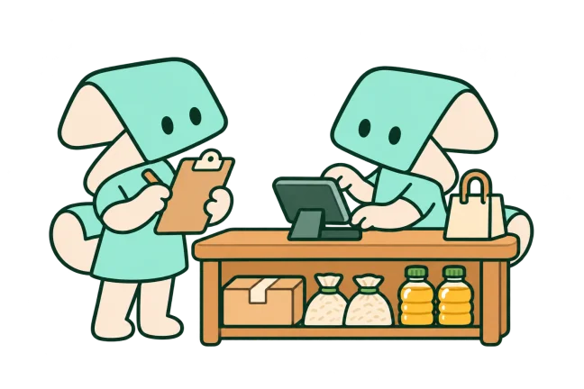
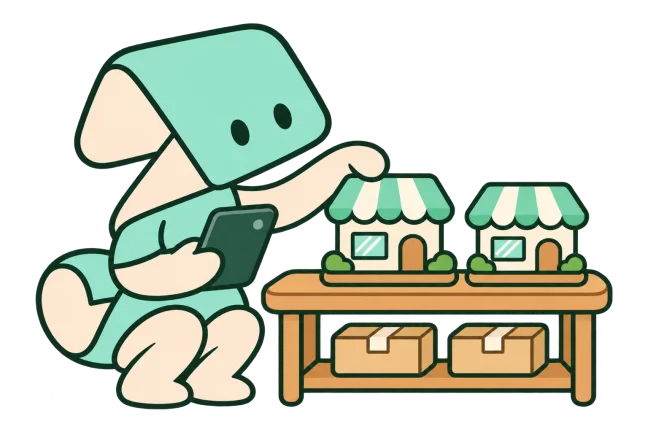
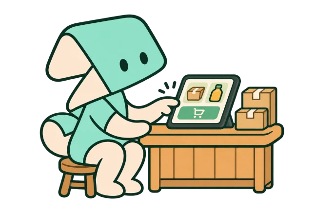
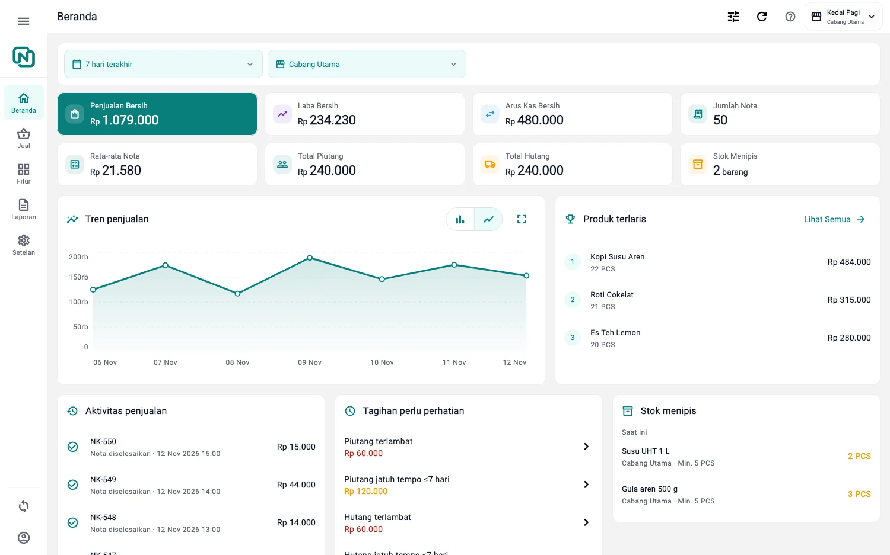

Beberapa orang di satu toko
Kasir mencatat penjualan dengan akunnya sendiri. Pemilik mengatur akses dan melihat laporan sesuai perannya.
Beri pemilik dan staf akses masing-masing. Kelola satu toko atau beberapa cabang, dari ponsel hingga tablet di meja kasir.

Atur hak akses pemilik dan staf.
Kelola kegiatan tiap toko.
Tampilan lega di meja kasir.
Transaksi tersimpan di perangkat.

Kasir mencatat penjualan dengan akunnya sendiri. Pemilik mengatur akses dan melihat laporan sesuai perannya.

Kelola cabang dengan akses sesuai penugasan. Pilih Starter untuk setiap cabang yang perlu tersambung.

Lihat daftar barang dan keranjang berdampingan saat ruang layar mencukupi.
Lihat penjualan, jumlah nota, arus kas, dan stok menipis. Pilih cabang dan periode untuk fokus pada data yang kamu perlukan.

Catat transaksi tunai atau tempo, siapkan diskon, dan proses retur.
Simpan pesanan, catat uang muka, lalu terima pelunasan saat pesanan selesai.
Atur meja, menu, dan resep. Catat pesanan makan di tempat, bawa pulang, atau pesan antar.
Jual barang yang sama per pcs, pak, atau dus. Stok dihitung dalam satuan dasar.
Atur harga grosir menurut jumlah beli atau harga khusus untuk jenis pelanggan.
Pindai barcode, cek stok fisik, dan telusuri keluar masuk barang di Kartu Stok.
Catat uang masuk dan keluar. Buka dan tutup sesi untuk mencocokkan saldo kasir.
Pantau tagihan pemasok dan pelanggan, termasuk jatuh tempo dan sisa pembayaran.
Lihat penjualan, laba rugi, dan arus kas untuk periode yang kamu pilih.
Pakai logo usahamu, cetak lewat printer thermal, atau bagikan nota digital.
Dengan Starter, staf masuk dengan akun sendiri dan bekerja sesuai hak aksesnya.
Sinkronkan data antarperangkat dan kelola cabang dengan Starter aktif.
Aktivasi akun pertama perlu internet. Starter diperpanjang secara manual. Ketentuan Pembelian Starter
Bisa. Pilih Starter untuk Cabang Utama agar pemilik dan staf bisa memakai akun masing-masing sesuai hak aksesnya.
Cabang Utama bisa tetap Gratis pada perangkat utama pemilik. Cabang tambahan memerlukan Starter aktif untuk mencatat transaksi baru.
Transaksi yang diizinkan tetap bisa dicatat pada perangkat. Untuk cabang Starter, sinkronisasi dilanjutkan saat koneksi tersedia.
Data transaksi tetap tersimpan. Pemilik masih bisa mencatat secara lokal di perangkat utama pada Cabang Utama. Cabang tambahan dan perangkat lain memerlukan Starter aktif untuk mencatat transaksi baru.